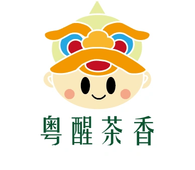
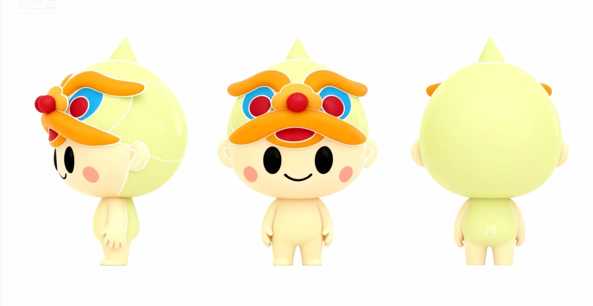
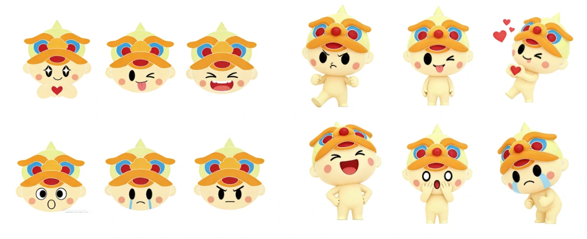

粤醒茶香 — 从茶杯里醒来的狮童
广州的早晨有两种声音：茶楼的碗筷，和醒狮的鼓。 我把它们放进同一个角色里——一只顶着狮头、泡在茶杯里刚睡醒的小家伙。
- Role
- 形象设计 / 视觉系统
- Deliverables
- 标志 · 三视图 · 表情 · 衍生品
- Motif
- 醒狮 × 粤式早茶
- Tools
- Illustrator · AIGC 建模
- Year
- 2025

衍生手办三配色：茶绿、荷粉、紫芋。
「醒」是这两件事共同的字
醒狮的「醒」，是敲醒；早茶的「醒」，是刚睡醒。 一个向外，一个向内，但都发生在广州的清早。 名字定下来之后，角色几乎自己就出来了： 一个还没完全睡醒的小孩，把醒狮头当帽子戴着，坐在一杯茶里。
这里有个刻意的错位——最威武的道具，配最没精神的表情。 反差是让一个 IP 被记住的最短路径。 威武的狮子有很多，困成一团的狮子只有一只。


最威武的头饰，
配最没睡醒的脸。
全部由圆构成
身体是一个球，头是一个更大的球，狮头的眉、鼻、耳也都是圆弧的堆叠。 整个角色找不到一条直线。这让它在放大成 1.8 米的美陈、 或缩小成手机贴纸时，轮廓的识别度都不会衰减。
配色沿用醒狮的传统三色——朱红、明黄、宝蓝——但把饱和度压下来， 再让身体使用茶汤的浅绿。传统的骨，当代的皮。
- 狮鬃 · 明橙
- #ec9138
- 狮眼 · 朱红
- #D92B23
- 狮纹 · 宝蓝
- #1E9AD6
- 身体 · 茶汤
- #E6F0B8
- 肤色 · 米黄
- #F7D9A0
- 字标 · 深绿
- #1C5C3B
十二种情绪，一套语法
IP 从形象变成「关系」，靠的是表情。我做了十二个状态： 开心、比心、吐舌、大笑、生气、震惊、委屈、哭、害羞…… 分为头像版（用于聊天贴纸、头像框）和 全身版（用于运营插图、动效）。
规则很简单：狮头保持不动，只改眼睛和嘴。 头饰是身份，五官是情绪——把两者分层， 新增表情就不再需要重画角色。

从平面到手里
形象最终要被握住。衍生手办把「泡在茶里」这件事做成了实体结构： 角色半身沉进杯中，杯壁上的爱心与小狮脸随配色变化， 杯托做成可旋转的底座。
三个配色对应三款茶：茶绿（绿茶）、荷粉（荷叶）、紫芋（芋香）。 这让 IP 与产品线直接绑定， 集齐三只等于把菜单喝了一遍——盲盒的收集动机由此成立。
还差一套动起来的规范
目前的表情是静态的。而 IP 真正活起来的时刻是动效—— 醒狮的动作有明确的鼓点节奏（起、探、跃、收）， 这套节奏可以直接翻译成缓动曲线。
下一步我想做一份动态规范：眨眼间隔、狮头晃动的幅度与频率、 待机时的呼吸。让它在屏幕上「有生命」，而不只是「有形象」。